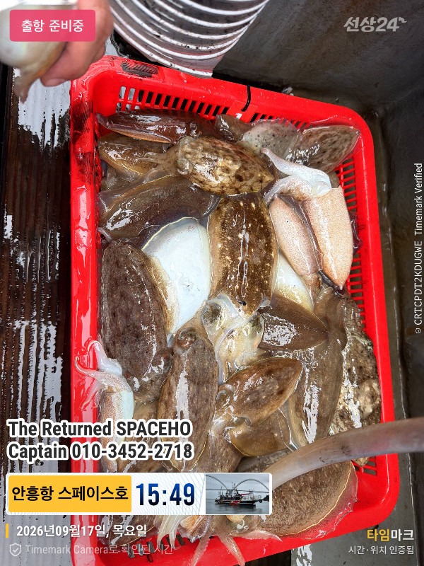

사진 15장2026-09-17 · 안흥 스페이스호
9월17일 안흥항 스페이스호 100갑 조황 입니다 오늘 14분의 조사님을 모시고 가고 싶었던 필드로 다녀왔습니다.급 출조모집에 찾아주신 조사님들 감사드립니다.덕분에 바다에 다녀올수 있었습니다~꾸벅시즌을 늦게 오픈해서 빈자리가 많습니다.스페이스호를 찾아주신다면 최선을 다하겠습니다.***
9월17일 안흥항 스페이스호 100갑 조황 입니다 오늘 14분의 조사님을 모시고 가고 싶었던 필드로 다녀왔습니다.급 출조모집에 찾아주신 조사님들 감사드립니다.덕분에 바다에 다녀올수 있었습니다~꾸벅시즌을 늦게 오픈해서 빈자리가 많습니다.스페이스호를 찾아